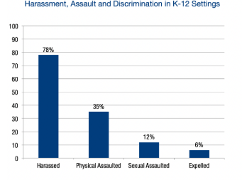

Stigma Definition
Stigma has a lot of different meanings and can be interpreted as many different things. When people say "that's [ex: disability] stigma," some people may agree to disagree. But according to the Link and Phelian definition of stigma, it states, "stigma exists when the following interrelated components converge. In the first component, people distinguish and label human differences. In the second, dominant cultural beliefs link labeled persons to undesirable characteristics—to negative stereotypes. In the third, labeled persons are placed in distinct categories so as to accomplish some degree of separation of "us" from "them." In the fourth, labeled persons experience status loss and discrimination that lead to unequal outcomes. Finally, stigmatization is entirely contingent on access to social, economic, and political power that allows the identification of differentness, the construction of stereotypes, the separation of labeled persons into distinct categories, and the full execution of disapproval, rejection, exclusion, and discrimination." Link and Phelian propose that stigma is a layered concept, these layers overlapping and coexisting with one another to make it be defined as "stigma." the first layer being us humans noticing differences from ourselves to others (e.g., "that guy has black hair and i have blonde hair"). The second layer is a cultural significance that impacts the way we perceive certain things (e.g., many regions of the world use different ways to greet each other due to different moral and cultural values). The third layer is a way of categorizing people based on their characteristics, and differentiating them from you yourself (e.g., "I'm part of LGBTQ+, but they are not," "They are a part of the Black community and I am a part of the Hispanic community"). The fourth layer is based on human experiences and how the discrimination they face affects them and labels them as a whole. And lastly, the fifth layer is a layer contributing to many other broad layers. In the end, stigma is a system of overlapping layers that are connected and can have a huge toll on someone's health, life, and overall social status.
Cerebral Palsy Stigma and Discrimination
Cerebral Palsy Is Contagious
A stigma/stereotype of cerebral palsy is that it can be contagious. This is not true and even though there is data and real logical evidence to prove, there is still a stigma lurking around that states that cerebral palsy can be passed along if you come close to someone who has it. Cerebral palsy is mostly developed due to damage in the developing brain (when the baby is a fetus), so this can NOT be true. This stereotype often hurts people with cerebral palsy, it makes them feel isolated due to the fact that many people view their condition as an illness that can be spread around.
People With CP Are Intellectually Disabled
The stigma that people with CP are not capable of learning and not being to be "intelligent" enough, is highly active and hurtful. Due to this view on them, many are demotivated and struggle with self-worth when others put the idea into their heads that they are incapable of having intelligence. This can cause many mental health issues, including depression and anxiety.
People with cerebral have a short-life span
The lifespan for someone with cerebral palsy varies, but those with better healthcare access tend to live longer lives than others. Condemning people with cerebral palsy as sick and with short-life spans heightens the risk of depression and loss of identity.
People with cerebral palsy always are in wheelchairs
There are different types of cerebral palsy diagnoses and each person varies. Some may have better mobility skills than others, while the latter can have worse mobility needs. This is a negative stereotype and can affect them through the lenses of discrimination and prejudice.
A study conducted in 2011 shows that "restrictions in the socio-contextual environment influenced the social exclusion that children experienced. Youth encountered social exclusion from both teachers and peers. Children reported that teachers' attitudes toward children with disabilities often influenced the social exclusion experienced by peers. Bullies engaged in both implicit and explicit forms of social exclusion toward children with disabilities which often lead to verbal and physical bullying." Bullying has always been around, it is a behavior in which kids learn at a young age due to societal factors and differences they find in each other, it is also due to parental figures displaying such actions which later, kids start to mimic. Kids and/or adults are more vulnerable to bullying and discrimination due to the fact that they have a condition that prevents them from being a "normal" person.
Some reasons why kids with cerebral palsy get bullied is because they stand out more often, bullies often think they are vulnerable and cannot defend themselves, they often are deemed socially irrelevant due to their condition, and because certain kids have certain needs, which makes them "easy" targets. Bullying can be from other kids, but also teachers. Bullying isn't always physical, it can also be emotional and psychological, but all these different types of bullying can affect a child's development and can cause severe trauma, leading to forms of mental health disorders taking shape as the child grows up. "Children with CP had higher prevalence of depression (7.8%, 2.7%; p=0.017), anxiety (30.2%, 6.2%; p<0.001), behavior/conduct problems (27.3%, 4.9%; p<0.001), attention-deficit/hyperactivity disorder (19.5%, 7.1%; p=0.030), and multimorbidity (22.3%, 5.2%; p<0.001) compared to controls."
Besides bullying in kids and teens, discrimination is still faced in adult life. Common places of discrimination and stigma are most commonly found in public places. "Of 48 people who answered the quantitative questions a total of 87.5% agreed that they had experienced stigma (62.5% fully agree and 25% mainly agree). Participants (n ranging from 41 to 47) also answered questions on the sources of stigmatisation or discrimination. The four most frequently reported sources of multiple instances of stigma were the public (80%), classmates (57.8%), healthcare professionals (52.2%) and employers (46.3%)."
In adults, substance abuse and mental health conditions worsen. A person with cerebral palsy states, "I do not really drink but I started drinking because it is the cheapest thing I can afford and it's the easiest way I can escape." Depression is most frequent in cases of cerebral palsy due to the fact that they face a lot of discrimination, "Depression and anxiety were frequently reported among participants, though many lacked a formal diagnosis and consequently lacked support. One poignant example is Joy's experience: She spoke extensively about her inability to access services and how this influenced her mental health and well‐being. She experienced fatigue and mental health ramifications associated with CP but was unable to access services and funding because she had "mild" CP and lacked a formal mental health diagnosis. Joy also shared her experience of homelessness."

Transgender Stigma in the United States
Transgender stigma and discrimination in the United States is unfortunately an extremely common occurrence. A study by Jamie M. Grant, a PhD researcher shares how transgender individuals have encountered many types of unwelcoming environments and pressure in their everyday lives.
Discrimination against Transgender People Due to Lack of Acceptance In the Workplace
One of the ways transgender individuals face stigma is at their jobs. The reason for this is there are people who still have yet to accept people who identify with being transgender. These employers may view these individuals as "unprofessional" and this causes gender non-conforming individuals to be removed from jobs or receive less benefits as cisgender people. A study by Jamie M. Grant, a PhD researcher shares, "Forty-seven percent (47%) said they had experienced an adverse job outcome, such as being fired, not hired or denied a promotion because of being transgender…"Grant, J. M. (et al., 2011).
This means that almost half of the people who took this survey who identified with being transgender were outcasted in the workplace because of their gender identity. This negatively affects the lives of transgender individuals because this study reveals that gender non-conforming people are limited to job positions in the work industry due to the prejudice of employers in the workplace.
Discrimination against Transgender Individuals While In Educational Settings
Another way gender non-conforming individuals experience stigma is while pursuing their education. The reason for this could be because maybe other people view transitioning as "abnormal" and different from the gender expectations members of society set in place. This makes transgender people targets for bullying, harassment, exclusion, and violence. For example, "Those who expressed a transgender identity or gender non-conformity while in grades K-12 reported alarming rates of harassment (78%), physical assault (35%) and sexual violence (12%); harassment was so severe that it led almost one-sixth (15%) to leave a school in K-12 settings or in higher education" Grant, J. M. (et al., 2011).
According to this survey conducted by Grant demonstrates high amounts of stigma against transgender individuals. Unfortunately, the participants from the survey have experienced many injustices in the school system with identifying as gender non-conforming. This directly affects these people unfavorably since these injustices could cause transgender people to struggle with their mental health, lower their self-esteem, and struggle more to focus on their educational careers from early on.
